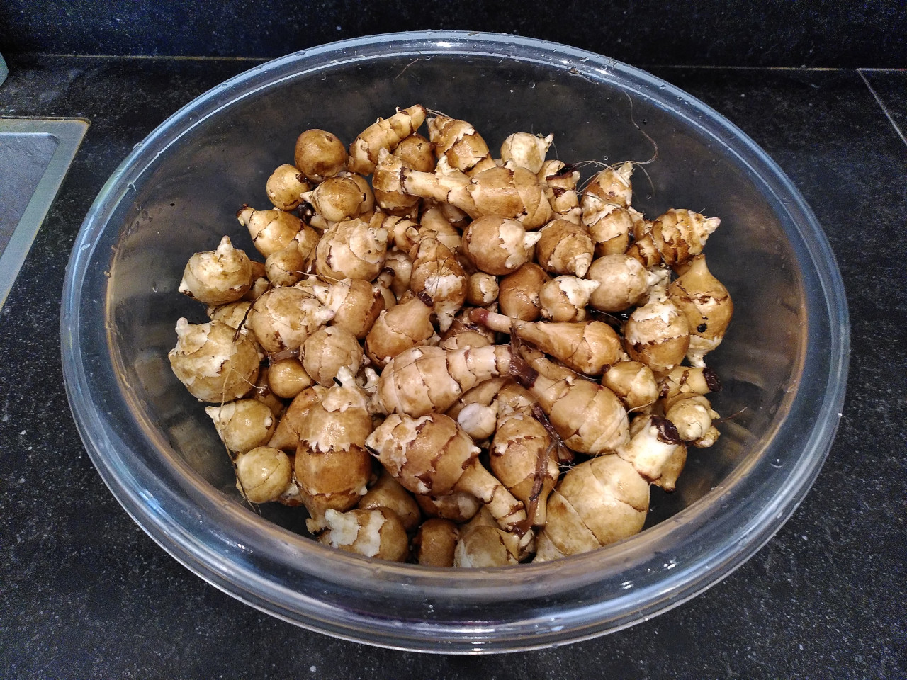
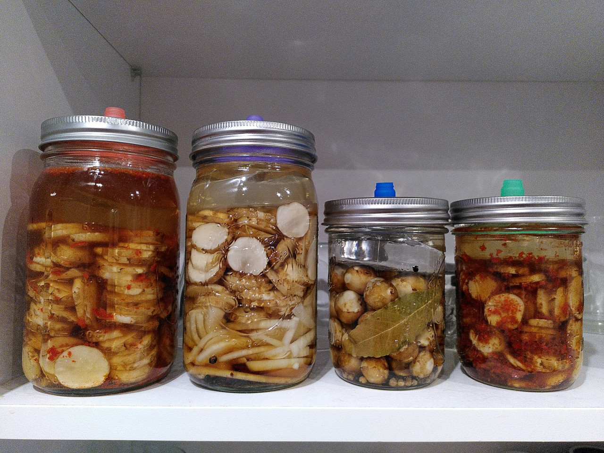
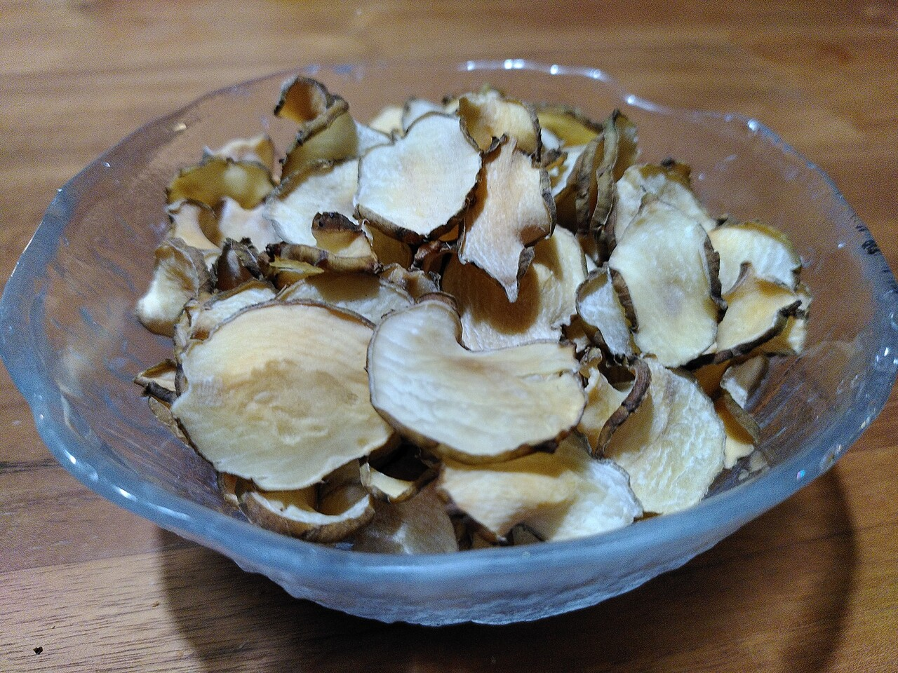

Aardperen
Aardperen; een van de vergeten groenten. Eigenlijk gewoon een onmogelijke groente in de supermarkt, maar een ideale groente in de tuin. Je kan ze niet bewaren, behalve onder de grond. De hele winter oogsten wij aardperen. Wij hebben twee potten van 50 liter met aardperen bij huis staan. Praktisch en leuk voor de kinderen om af en toe een portie aardperen uit te grabbelen. Daarnaast hebben we nu ook een vierkante meter met aarperen op de volkstuin. Dat is meer dan genoeg voor ons. We eten regelmatig aardperen door de stampot of bij de hollandse hap. Ik heb meerder porties aardperen voorgekookt en als puree ingevroren voor soep en stampot. Na een paar keer grabbelen uit de tonnen, haal ik ze ook een keer helemaal leeg om alle resteren aardperen te oogsten. De ton opnieuw van wat mest en compost te voorzien en dan stop er ik er een aantal terug voor volgend jaar. Met de resterende oogst uit de tonnen ben ik gaan experimenteren met het fermenteren van aardperen.
Aardperen fermenteren
De basis van fermenteren is simpel. je heb nodig:
- aardperen
- (fermentatie)pot
- water
- zout
Daarnaast kan eindeloos varieren met smaken. Dit zijn de varianten waar ik mee aan de slag gegaan ben:
- Een vrij neutrale versie met ui, peper en een laurier blad.
- Een eenvoudige versie met alleen een takje rozemarijn.
- Een kimchi variant met gedroogde en grof gemalen rode pepers, soya saus (link), gember, knoflook, en sesamolie. Zie ook mijn blog kimchi van Aaardperen.
- Een variant met miso, ui enlimoen.
instructies
- Was de aarperen. Schillen is optioneel en met de vorm kan je ook varieren van blokjes, plakjes tot raspen.
- Weeg de pot en vul de pot met de kruiden en de aardperen. Leg er een gewicht op en vul aan met water tot alles goed onder staat.
- Bereken het totale gewicht (aardperen+smaakmakers+vocht)
- Weeg 2 % zout af. Giet het vocht uit de pot in een kommetje en los hier het zout in op. Giet het vocht met zout dan weer terug in de pot.
- Zet de pot weg op kamertemperatuur.
- Ik kijk meestal om de 3 dagen even hoe de potten erbij staan. Als er iets op het vocht drijft schep ik dat er met een schone lepel vanaf. De steen spoel ik even af onder de kraan en de binnenrand van de pot maak ik schoon met een keukenpapiertje.
- Wanneer een pot klaar is met fermenteren vind ik altijd lastig te bepalen. Ik denk dat dat iets is wat je door ervaring vanzelf leert. Nu kijk ik vooral naar hoeveel luchtbellen ik zie. Of hij goed ruikt. Of ik wat zuur proef.
Aardperen chips
Naast fermenteren heb ik ook aardperen chips gemaakt. Ik ging voor de meest eenvoudige variant. De aardperen gingen na schoonmaken met schil en al in de keukenmachine. de mooie plakjes op een bakplaat gelegd. Die gingen ca 30 minuten (regelmatig checken) in de over op 130 graden. Ze moeten goed droog en lekker knapperig zijn.
|  |  |  |